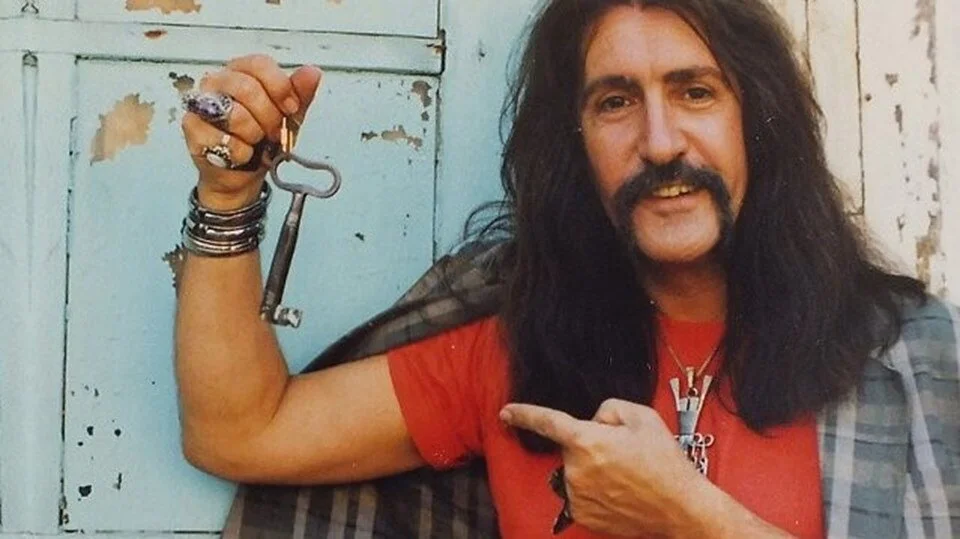

Sezen AKSU
Ne böyle senle ne de sensiz

Barış MANÇO
Sarı çizmeli Mehmet ağa

Neşet ERTAŞ
Neredesin sen
Müzik ve ritm, yollarını ruhun gizli köşelerinde bulurlar.
Ne böyle senle ne de sensiz
Sarı çizmeli Mehmet ağa
Neredesin sen
Sezen Aksu'nun yaşam macerası 13 Temmuz 1954'te Denizli Sarayköy'de başladı.
Dinlemek için bağlantıya tıklayın.
Bazı eserleri sığdıramasak da en bilindikleri...
1975 yılında, Sezen Seley adıyla, ilk 45'liği Haydi Şansım'ı çıkardı. Çok az satan bu 45'liği Sezen Aksu adıyla piyasaya çıkardığı ikinci 45'liği Yaşanmamış Yıllar/Kusura Bakma izledi.
| Yıl | Ödülü Veren Organizasyon | Kategori |
|---|---|---|
| 1993 | 21.Altın Kelebek Ödülleri | En İyi Pop Müziği Kadın Solist |
| 1995 | 1.Kral Tv Video Müzik Ödülleri | En İyi Şarkı Sözü (Sevdam Ağlıyor) En İyi Beste (Aacayipsin) |
| 1996 | 2.Kral Tv Video Müzik Ödülleri | En İyi Pop Müzik Kadın Sanatçı |
| 2000 | 28.Altın Kelebek Ödülleri | Türk Pop Müziği Onur Ödülü |
| 2001 | 7.Kral Tv Video Müzik Ödülleri | En İyi Beste (Keskin Bıçak) |
Minik Serçe...
Yukarı Çıkarak Sanatçıların Biografilerine Erişebilirsiniz